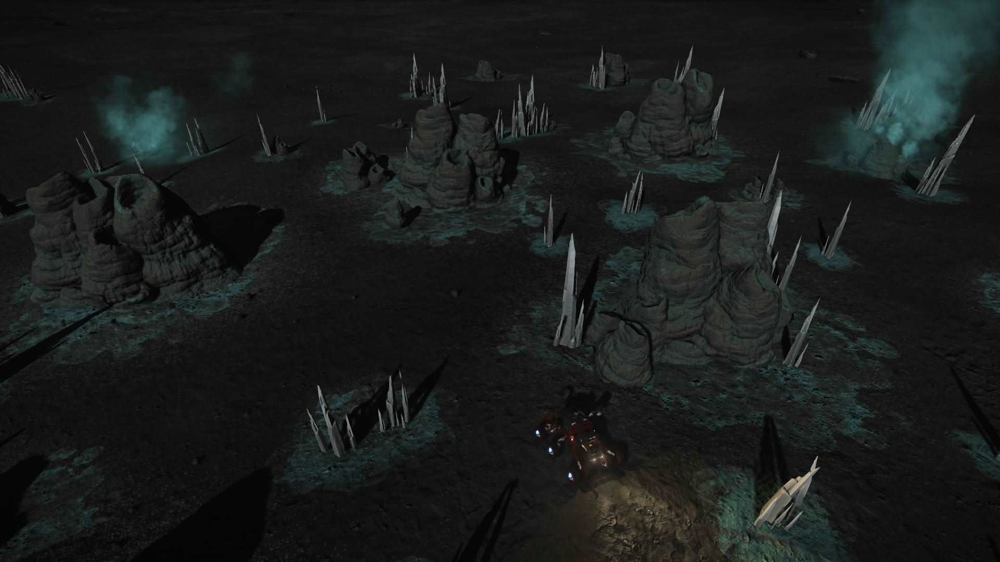
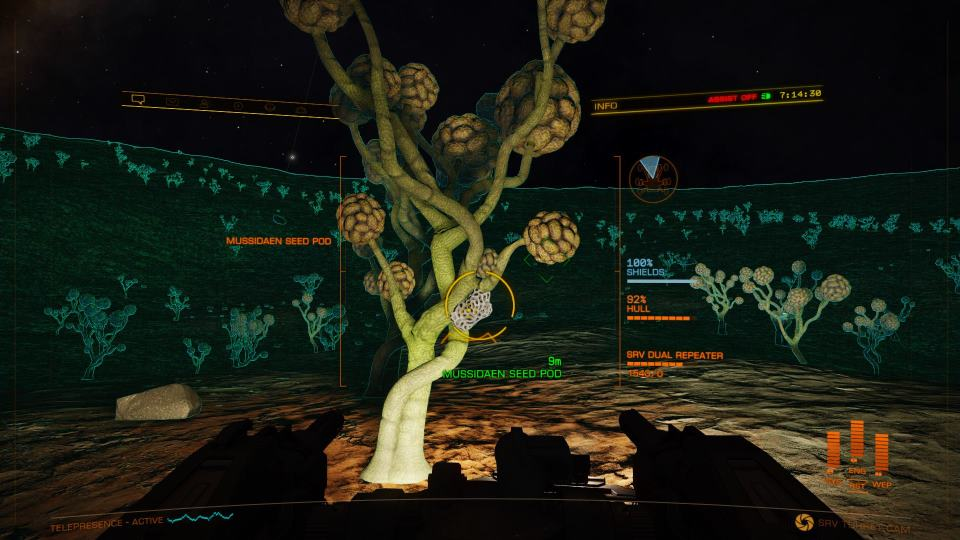

Crystalline Shard fields are surface biological sites that grow harvestable crystals, each dropping a Grade-4 raw material — the rarest raw tier. There are exactly 7 raw categories, each topped by one G4; this circuit hits all seven, then you trade down at a Raw Material Trader to backfill every lower grade. Includes the seven exact stand-here coordinates.
Crystalline Shard fields are surface biological sites that grow clusters of crystals you harvest from the SRV. Each cluster tip drops ~3 units of one Grade-4 raw material — the rarest tier of raw mats (raw materials only go G1–G4; there is no G5 raw).
The magic is the math: there are exactly 7 raw-material categories, each topped by one G4. The shard circuit below hits all seven. Cap the seven G4 bins, fly home, and trade down at a Raw Material Trader to backfill every G3 and G2 in every category. One run = the whole raw grid filled. It also conveniently progresses your Professor Palin unlock if that's still open.
A single dense field can fill a G4 bin (cap 150) in minutes — you only ever need a fraction of that, since trading down multiplies it across the lower grades.
Any exploration-capable ship works (unengineered is fine); an Asp Explorer, for instance, already carries most of this:
The Detailed Surface Scanner (DSS) is the one non-negotiable: it's how you confirm a body actually has shards and map the dense patches before committing to a landing.
Locating the field is the same drill at every site — the harvesting itself is in Section 4:
Discovery-scan the system, open the system map — a shard world lists Surface Signals, and crystal shards register under the Biological category (not Geological).
Fly to the planet until you drop into the glide screen.
Switch to Analysis mode, deploy the scanner — the view changes to the probe-aiming overlay.
Fire probes (they arc around the horizon, so no full line-of-sight needed) until you hit "Mapped" — aim for 90%+.
Cycle the heat-map filter to Biological signals. Darker / more intense colour = denser concentration. (There's no "Crystal Shards" label — they live under Biological.)
On the Live engine there's no selectable shard waypoint in the left panel, so you fly to the lat/long manually (your HUD shows current lat/long in orbital cruise).
Set down beside a dense patch and drop the buggy — then work the field as in Section 4.
For these known sites the coordinates are far faster — the DSS map is really just there to confirm shards exist before you land. The Biological heat map is how you'd find brand-new sites you're prospecting yourself.
Both site types are worked from the SRV, and the loop is the same: drive up, shoot the part that holds the material, then scoop the fragments. The only differences are what you aim at and how much each hit gives.

Drive up to a cluster and aim at the thin crystal needles jutting out of the mound — ideally the point where a needle joins the body. The fat base mound itself drops nothing; reposition the SRV if the body blocks your line.
Snap the needle with the SRV's plasma repeaters (your turreted weapons) — a couple of shots breaks it and scatters raw-material fragments on the ground. You can also dismount and knock several needles down on foot with your sidearm, then remount to collect the pile in one pass.
Deploy the SRV cargo scoop and drive over the dropped fragments — they vacuum straight into your weightless raw materials inventory (never the cargo hold). A needle gives about 3 units of that body's raw.
A dense field holds dozens of clusters — far more than you need. When the patch beside you is bare, just drive to the next cluster.

Only about 1 tree in 7 carries a harvestable pod at a time — scan the branches for the bright, knobbly seed pods (gold/yellow "popcorn" clumps).
Blast the pod with the SRV repeaters and scoop the fragments exactly as with shards. A pod gives roughly 1 unit (unconfirmed) — less per hit than a shard needle, so the forest's density is what carries it.
Fruiting trees are scattered across the whole forest; once you've picked the ones near you, drive on to fresh ground.
Unlike the manufactured-material settlements (Dav's Hope, Jameson), relogging does not reliably respawn shards or pods. Player testing shows a stripped shard cluster stays bare after a menu relog — natural regrowth runs to weeks. Brain-tree pods only regrow once the entire instance is torn down (everyone in it quits to desktop), so a solo menu-relog won't do it either. The real "loop" is spatial: keep driving to the next cluster or fruiting tree. The fields are big enough that one visit overfills a G4 bin many times over.
Tap any coordinate to copy it. Four categories at HIP 36601 (~1,600 Ly out), two at the neighbouring Outotz LS-K D8-3 (~1,715 Ly), and Selenium at HR 3230 — the near-bubble outlier at only ~425 Ly. Distances are straight-line from Sol. See Section 7 for the run order.
| # | System & Body | Coordinates | Material | Category | From bubble |
|---|---|---|---|---|---|
| 1 | HIP 36601 · Planet C 1 A | -57.4599, 126.9543Copy | Polonium | Category 6 | ~1,600 Ly |
| 2 | HIP 36601 · Planet C 1 D | -51.2639, 14.7291Copy | Ruthenium | Category 3 | ~1,600 Ly |
| 3 | HIP 36601 · Planet C 3 B | -17.6769, -55.1800Copy | Tellurium | Category 5 | ~1,600 Ly |
| 4 | HIP 36601 · Planet C 5 A | 3.5500, 111.5415Copy | Technetium | Category 2 | ~1,600 Ly |
| 5 | Outotz LS-K D8-3 · Planet B 5 A | -1.9216, -145.7013Copy | Yttrium | Category 1 | ~1,715 Ly |
| 6 | Outotz LS-K D8-3 · Planet B 5 C | -62.4905, 80.2426Copy | Antimony | Category 7 | ~1,715 Ly |
| 7 | HR 3230 · Planet 3 A A | 45.66, -30.49Copy | Selenium | Category 4 · see Section 8 | ~425 Ly |
The chase is the only fiddly part. Done right it's a minute per planet; done wrong (from the SRV) it's an hour-long slog. Three rules:
The higher you are, the faster the numbers move. Line the coordinates up while still up high, then drop almost straight down.
Fix latitude first by flying only heading 0° or 180°; once within a few degrees, turn to 90°/270° for longitude. (For site 1: head south to ≈ -57.5 lat, then east toward +126.95 long.)
Hold the first axis ±1–2° while dialing the second to within ±0.5°, then go visual — your SRV wave scanner and your eyes handle the last stretch. You can't fully steer the descent, so spend the final few km low and slow.
Two options, both in your apps directory's spirit:
Either turns "watch four numbers and guess" into "point the nose this way."
The play: fly out, top off all seven G4 bins, fly home, then visit a Raw Material Trader (find your nearest on Inara) and trade each G4 down its category to fill the G3 and G2 rows. The G1 commons you never collect deliberately — they accumulate everywhere you fly.
Two of the three systems are a tight pair deep in the Sanguineous Rim (HIP 36601 and Outotz LS-K D8-3, only ~406 Ly apart); HR 3230 sits near the bubble. The single long leg between them dominates the trip, so clip HR 3230 on as you leave and run the deep pair as one stop:
First stop on the way out. Harvest Selenium at 3 A A (the brain-tree forest, Section 4).
The long haul into the Rim. Work all four bodies here — Polonium, Ruthenium, Tellurium, Technetium (C 1 A / C 1 D / C 3 B / C 5 A).
A quick hop next door for Yttrium and Antimony (B 5 A / B 5 C).
Fly home with all seven G4 bins topped, then trade down at a Raw Material Trader.
Order barely matters — the ~1,400 Ly gap between HR 3230 and the deep pair is the dominant cost whichever end you put it on. Doing HR 3230 first just gets the near-bubble category out of the way before you commit to the haul. A fuel scoop makes the legs trivial; budget the trip as one evening, not a chore between jumps.
| G4 top (collected) | Trades down to | G1 common (free) |
|---|---|---|
| Yttrium G4 | Niobium G3 · Vanadium G2 | Carbon G1 |
| Technetium G4 | Molybdenum G3 · Chromium G2 | Phosphorus G1 |
| Ruthenium G4 | Cadmium G3 · Manganese G2 | Sulphur G1 |
| Selenium G4 | Tin G3 · Zinc G2 | Iron G1 |
| Tellurium G4 | Tungsten G3 · Germanium G2 | Nickel G1 |
| Polonium G4 | Mercury G3 · Arsenic G2 | Rhenium G1 |
| Antimony G4 | Boron G3 · Zirconium G2 | Lead G1 |
Seven category-tops cover all 28 raw materials. Trading down within a category is cheap (1 G4 → several G3, and so on), so a modest G4 stock backfills everything below it.
It's a category-top G4 with no crystal-shard site at HIP 36601. The HR 3230, 3 A A location (site 7) is actually a brain-tree forest, not a shard field — same drive-up-and-harvest idea, but tips give roughly 1 unit each rather than 3, so it's slower (the forests are dense enough to make up for it). Alternatively, surface-prospect a metal-rich body whose composition lists Selenium — but check the composition first, because on most bodies it simply isn't present.
Carbon, Phosphorus, Sulphur, Iron and Nickel accumulate incidentally everywhere you fly and prospect. Never burn a shard run on them.
Figures on this page are verified against the sources below.
Note: on the Live engine there is no longer a selectable bio/geo site in the left panel — use coordinate navigation (or EDISON / EDbearing). Raw materials cap at G4 (150).